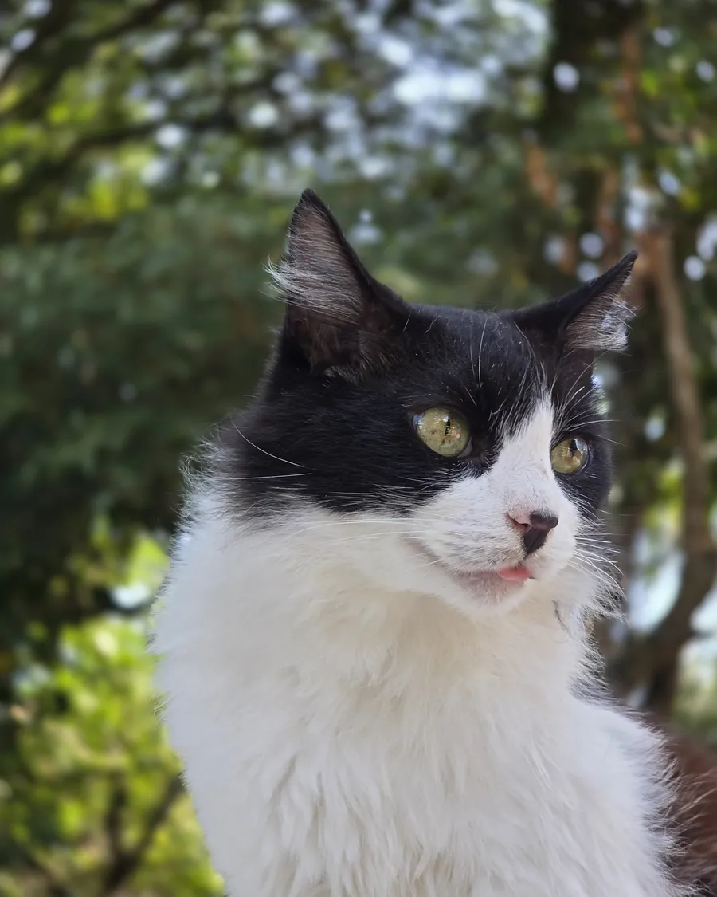
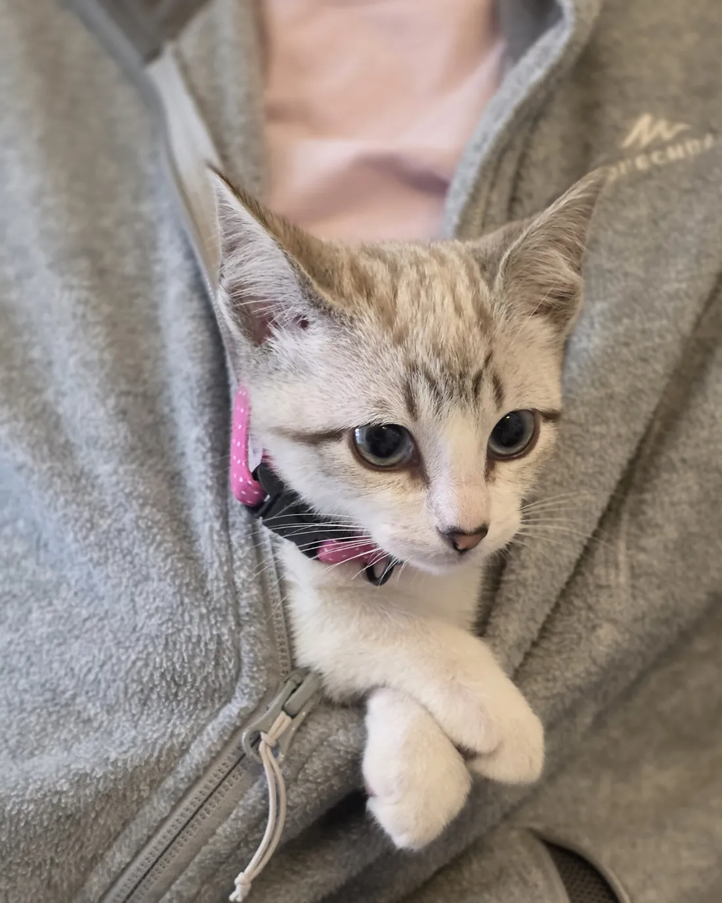
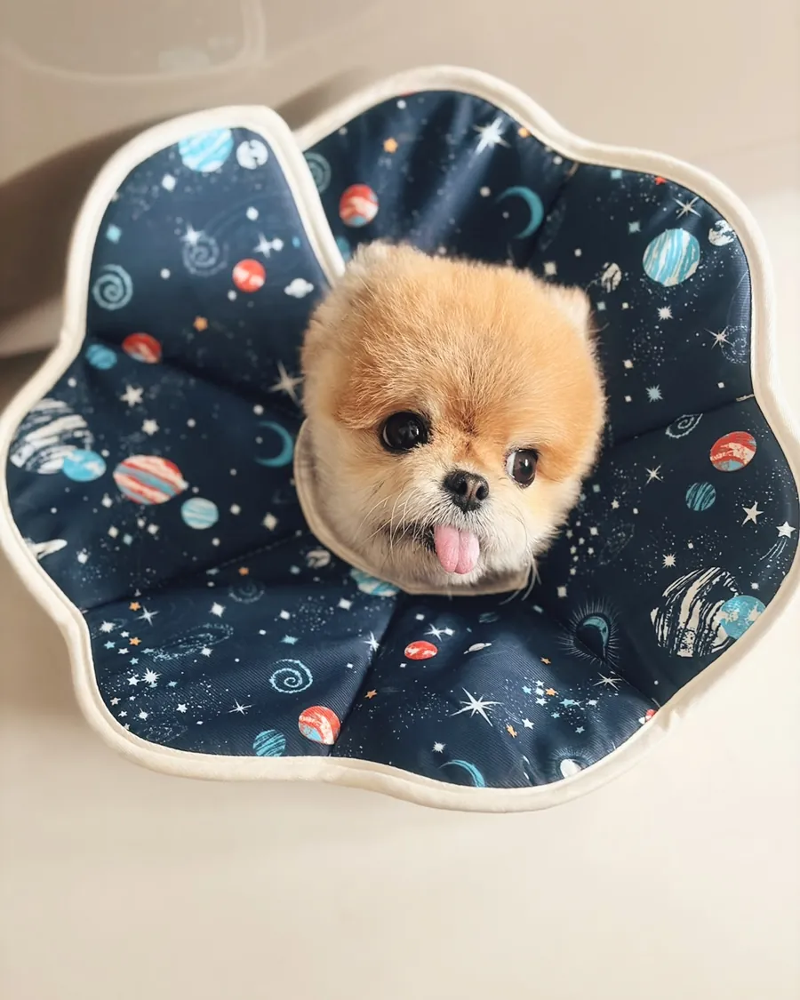
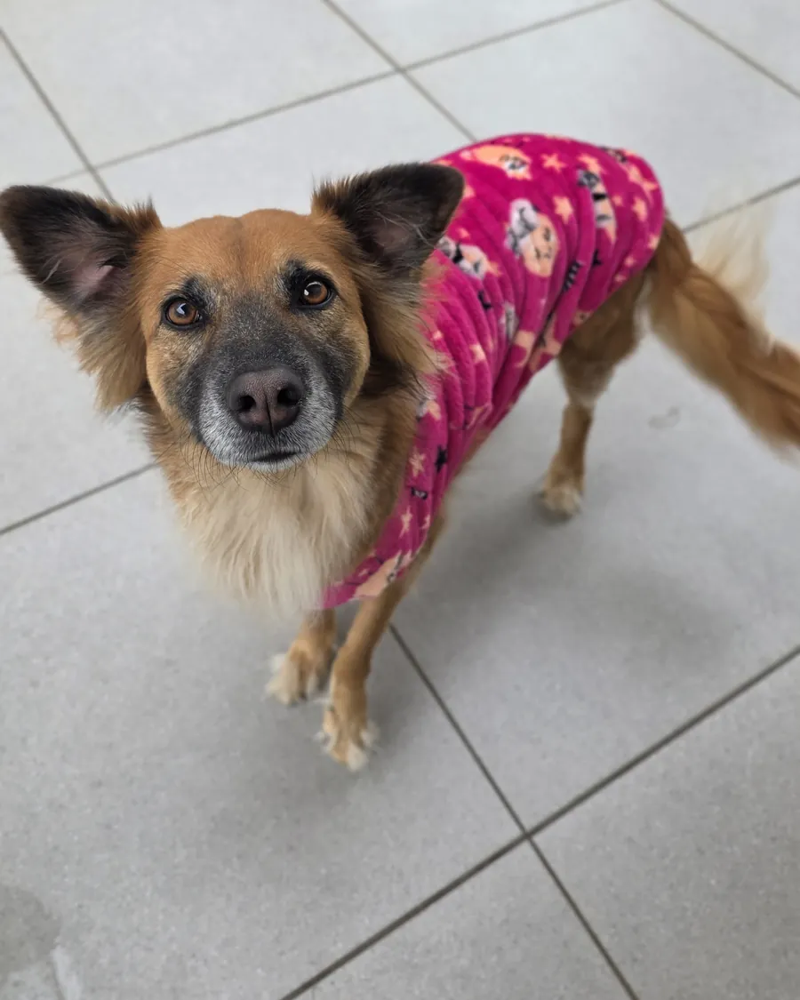
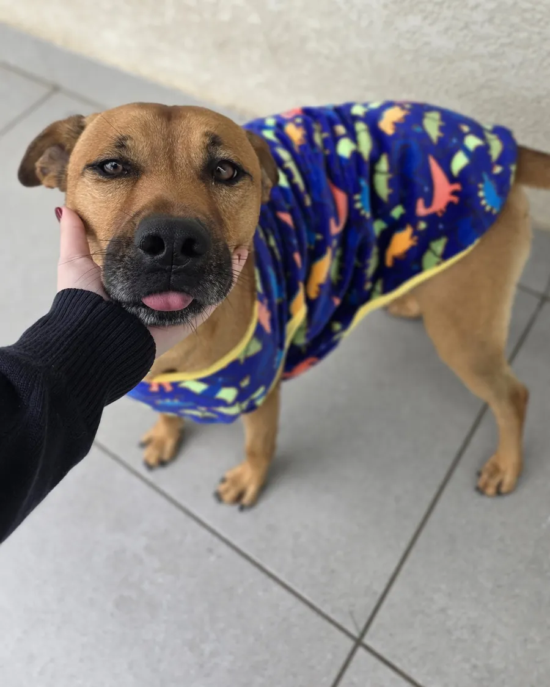

by barbara f tatsch //@barbarafonsecavet
by barbara f tatsch //@barbarafonsecavetArrasta
by barbara f tatsch //@barbarafonsecavetOs gatos escondem dor muito bem, e o exame de sangue mostra o rim mudando antes de qualquer sinal.
Idoso vai mais vezes.
todo dia, o Hachiko ia até a estação de Shibuya esperar o professor voltar do trabalho.

No dia seguinte, o Hachiko estava na estação de novo. E no outro. E no outro.
Foram quase dez anos assim.

Era filária, o verme do coração. E no estômago tinha mais uma surpresa que nenhum filme mostrou:
quatro palitos de espetinho.
1. prevenção contra o verme do coração, que passa pela picada do mosquito.
2. check-up com exame de sangue, mesmo ele parecendo ótimo.
3. espetinho com palito, nunca. O palito pode furar o estômago ou o intestino.
Lamber o pólen já pode causar lesão grave nos rins. Ligue para um médico veterinário de sua confiança.
Pode ser obstrução urinária. Não espere o dia seguinte.
se o Hachiko fosse meu paciente hoje, três coisas iam ser diferentes na história dele.
O Hachiko ficou sempre ao lado do professor. O teu fica sempre ao teu lado. A parte de cuidar dele é contigo.
E aí, você chorou no filme?
Confessa aqui
Comenta aqui o que acha que faltou nessa lista!
Um pote a mais em outro cômodo faz gato e cachorro beberem mais.
Mais água, menos risco de cálculo e cistite.